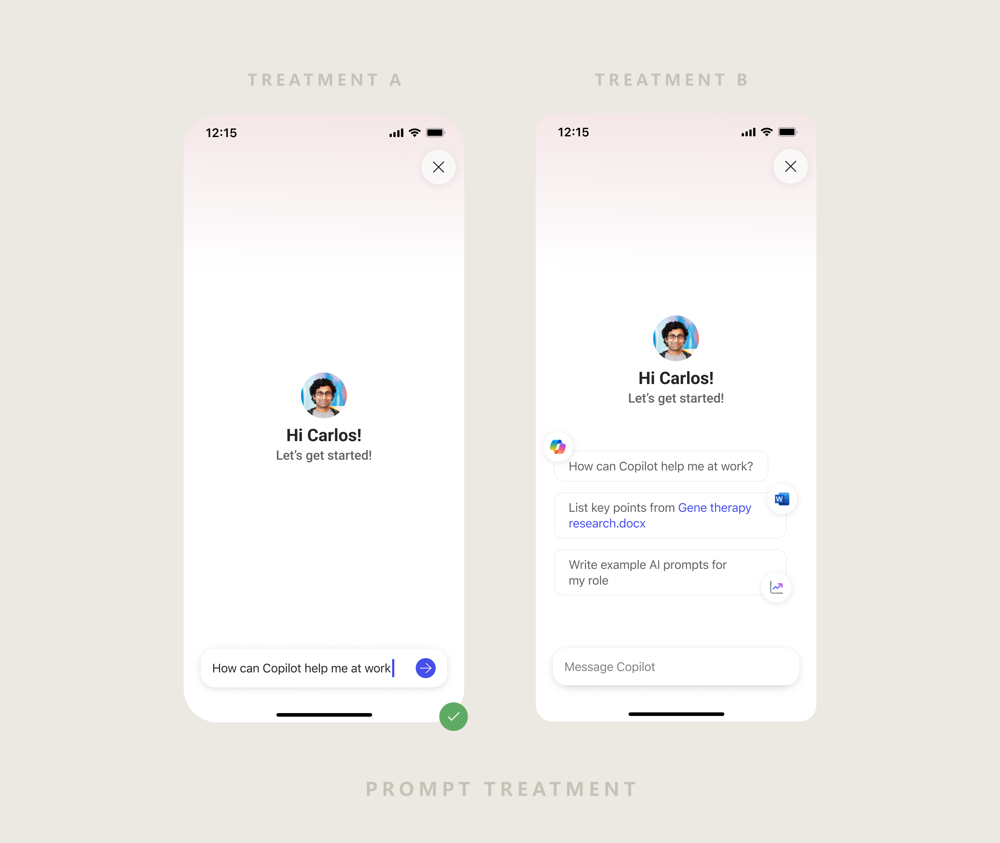
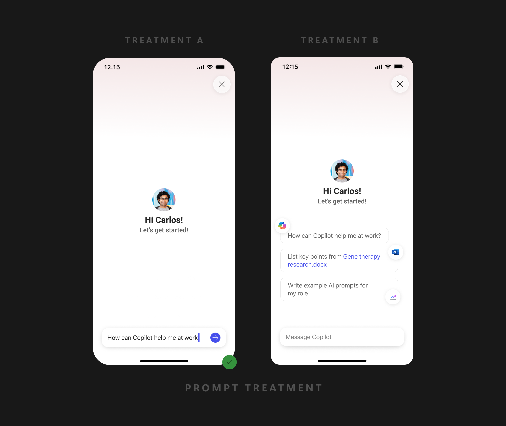

Turning a confusing first run into a guided first success — so new users feel Copilot's value before they're asked to trust it.
~40K
Net-new weekly prompting users — no acquisition spend
1.6–1.8×
Lift in consumer Week-1 activation
0
Retention regressions across iOS & Android
Role
Senior Product Designer
Product
M365 Copilot Mobile
Scope
Strategy · UX · Prompt Design · E2E Flows
Platform
iOS · Android
01 / The Problem
New users left before Copilot ever proved its worth.
The first run leaned on generic prompts and silent failures. Most new users never sent a meaningful prompt — and most never came back.
Research Insights
Chat Active Rate — New User Behaviour
Organic vs Inorganic acquisition across iOS & Android paid segments
Source: Historical app usage data from M365 Copilot Mobile telemetry
Organic
Inorganic
iOS
Paid Enterprise
Organic
60%
Inorganic
7%
Paid Consumer
Organic
35%
Inorganic
2%
Android
Paid Enterprise
Organic
63%
Inorganic
6.5%
Paid Consumer
Organic
8%
Inorganic
0.5%
New Users (overall)
iOS
26%
Android
19.5%
Only ~26% of new iOS users — and 19.5% on Android — ever became chat-active. The funnel was leaking at the very first step.
02 / The Insight
Stop touring features. Engineer a first success.
"If the first interaction feels useful, users come back. If it doesn't, they won't."
So the whole first run was rebuilt around a single moment: the user's first prompt succeeding — and a Week-1 target of every new user submitting one.
03 / The Design
Three moves that changed the equation.
01
Personalized first prompts
Work-graph prompts for M365 subscribers; quick-win prompts for consumers. Never generic suggestions.
02
Silent progressive setup
Eligibility and setup run in the background. Users reach chat only when Copilot is ready.
03
Control as a constraint
Dismissable at every step. Trust earned through quality, never forced engagement.
Design Explorations
Early flows and iterations — working through structure, density and hierarchy before landing on the final direction.
The first-run flow
Perceived latency turns a technical wait into a moment of personalization. The hero prompt arrives pre-filled and contextual — built to succeed. The response confirms Copilot understands the user's world.
End to end
04 / Experimentation
Two patterns. One quick test.
Two design patterns were on the table — Treatment A and Treatment B. To find out what actually worked before committing, we shipped both into a small A/B test with 5% of users, then finalized the pattern based on what moved the metric.


05 / Impact
Onboarding became a measurable growth lever.
Net new prompting users WoW
~40K
Driven purely by onboarding improvements — no acquisition spend.
↗
Reversed the decline
First-time prompting reversed its drop after earlier IA changes.
+1.6–1.8×
Consumer paid users
Week-1 Copilot Active users
+1.1–1.2×
Premium SKU
Week-1 Copilot Active users
✓
Stable retention
No negative signals. Consistent across Android & iOS.
06 / My Role
Sole designer, end to end.
Strategy & scope
Set direction and pressure-tested the spec with the PM.
Research & data
Grounded every decision in telemetry and prior studies.
End-to-end UX
Concept to ship — flows, prompt design, iOS & Android.
Prompt design
Engineered first prompts for first-time success.
Leadership reviews
Presented at milestones; defended rationale to senior leaders.